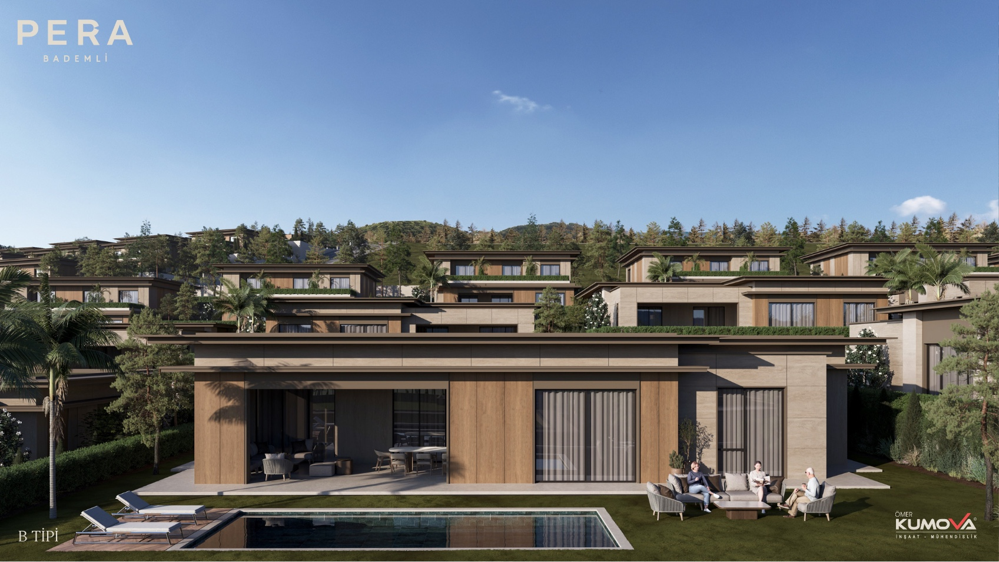

Ömer Kumova İnşaat
Pera Bademli
Bademli, Mudanya, Bursa

48.000 m² arsa üzerinde özel havuzlu kırk sekiz villa. Geliştirici, tek katlı ve dubleks seçenekler dahil beş plan tipi tanımlıyor.
01 / Görsellerle proje
Mekânları inceleyin.
Geliştiricinin proje galerisinden seçilen kaynak görseller.



02 / Proje bilgileri
Bademli, Mudanya, Bursa
Planlanan teslim Haziran 2028. Kaynak 6 Ekim 2026 tarihinde kontrol edildi; müsaitlik ve tarihler geliştirici tarafından teyit edilmelidir.
Satış iletişim bilgileriniz de aynı yerde
Bu örnek talep toplamamaktadır. Yayımlanan sunumda onayladığınız iletişim bilgileri ve başvuru bağlantıları yer alır.